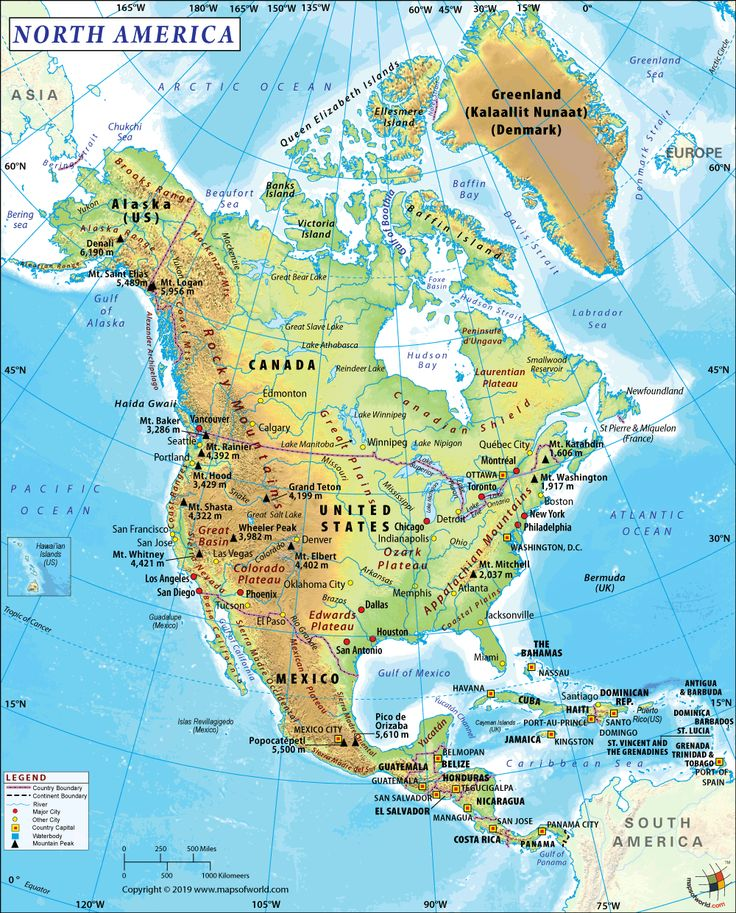
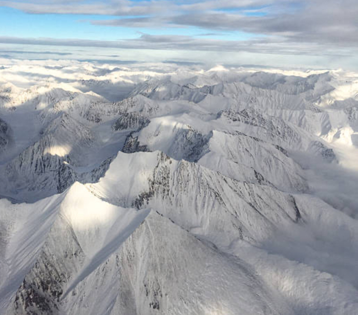
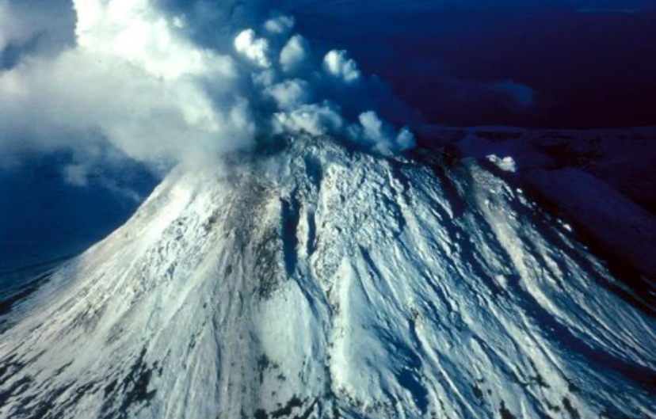
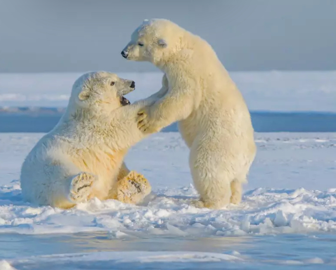
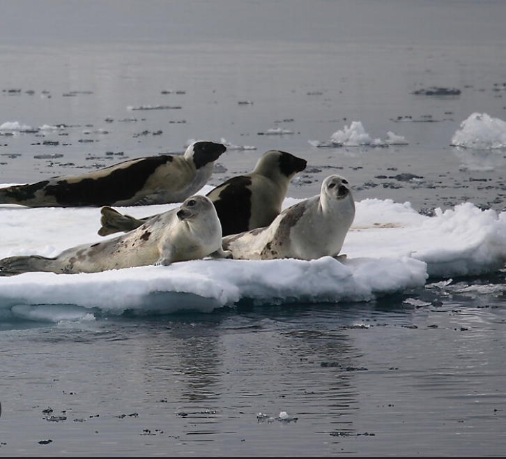
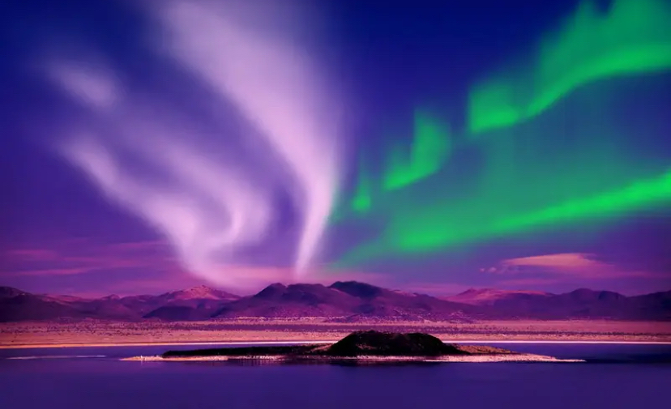

May, 2025
Hi everyone, or I should say “Stadium Physiosteo”!
I'm back from my extraordinary journey to Alaska. So,
let me tell
you in great detail what I discovered on this last frontier.
But before we begin, let me give you a brief general introduction to this country so you can
understand what
is
coming next.

So, first of all, Alaska is located in the western Canada. Since January 3, 1959, it has become
the 49th
state of the
United States.
Besides, it is the largest state because its surface area is 1,717,854 square kilometers for
740,339
inhabitants. To
finish, the country is populated by many indigenous people.
Now that I have finished my geography lesson, let yourself be carried away by the discovery of
this place.

If you love nature, don't hesitate a
minute longer and come here. Alaska is one of the most diverse country in terms of landscapes. Indeed, it is
home to
important mountain ranges such as Denali which is the highest peak in the USA with an altitude of 6,190 m.

Moreover, we can't forget that Alaska is also famous for its chains of volcanoes. Today there
are six active
volcanoes. When we read this, we can imagine that there is only stone, but no! It’s just a prejudice. Pay
attention
to your balance, the last frontier is also a synonymous of giant glaciers flowing into the ocean. Night
walks,
despite the cold, are the most pleasant, with a bit of luck the Northern Lights.
Finally, vegetation also ends with the tundras which are plains with very low vegetation.

In terms of fauna, it is so rich. The many diverse landscapes permit to meet lots of rare
animals. For
example, we
can see polar bears and grizzly or again moose with lynx. Seriously, seeing seals racing on the ice floe is
the best
sight I have ever seen.

>Oh yes! I almost forgot — there are also lots of fish.
To finish, how not to talk about the population? All the inhabitants are very kind, welcoming
and so
generous. They
welcomed me for the stay. It was really an incredible experience. Every evening, while we ate the fish
caught in the morning, the explained all thier culture and traditions.
So I understood that living in a big city is not a wish for them. They want to stay savage to
transmit their
traditions to the next generations. It’s very important to conserve this cultural wealth like fishing on the
ice
floe
using seal breathing holes.

Then, with the complicated climatic conditions like -11°C in winter, the inhabitants
remain united
and help
each other. I can see this union between them notably with the Eskimo kiss which shows this complicity.
Finally, the problems of this country were also in our discussions. They explained to me that
the balance
between
economic development based on raw materials (gold, zinc, oil...) and environmental conservation is very
complicated.
As well as global warming, it is also an important problem for endangered species.